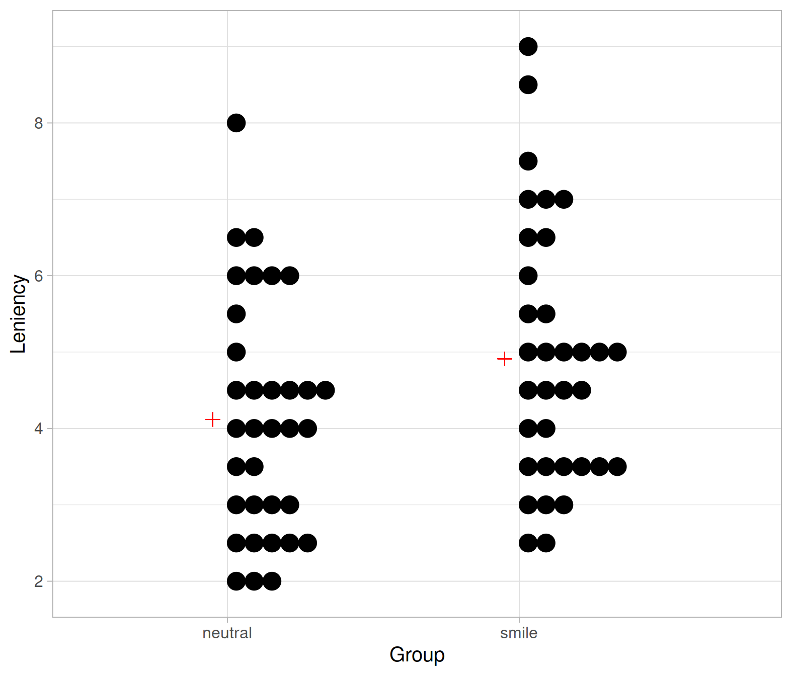
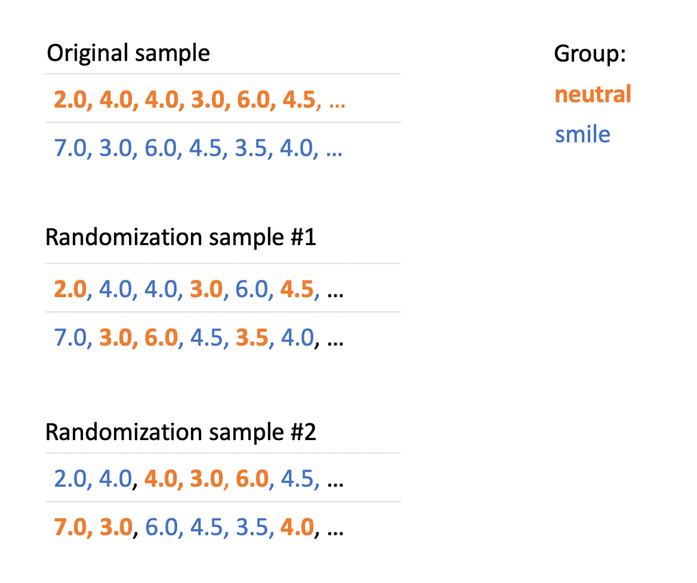
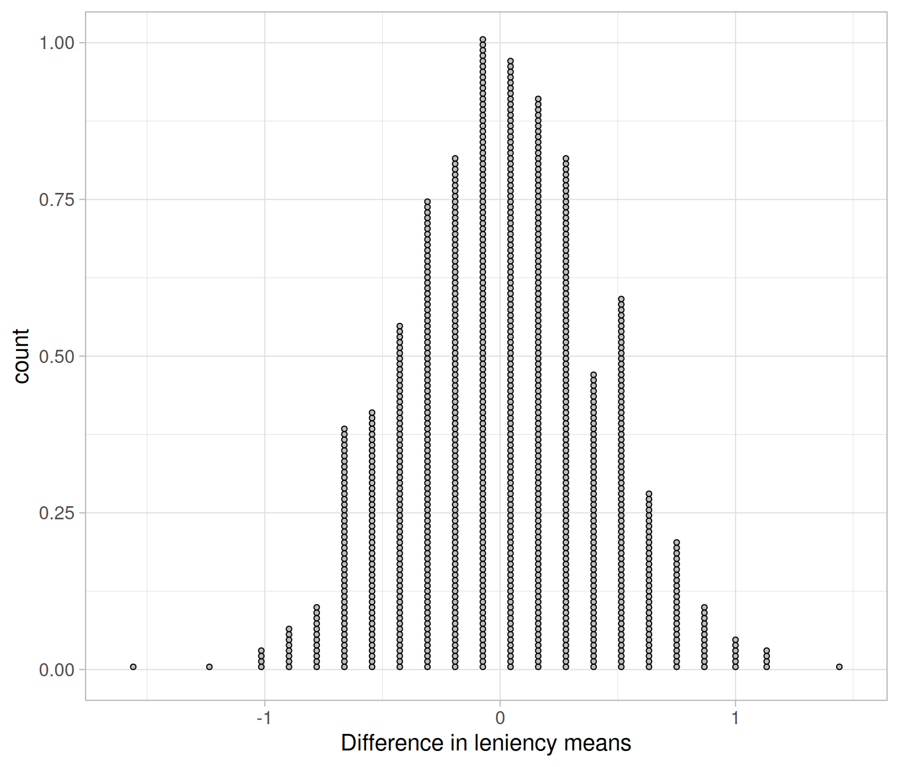
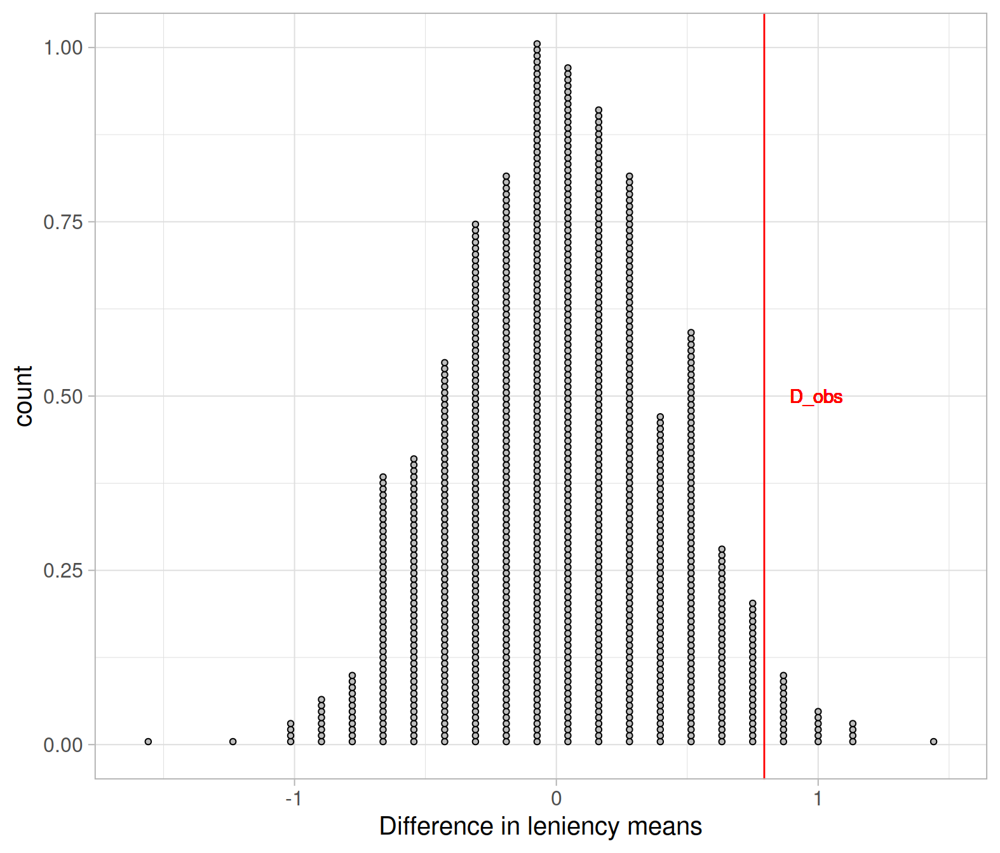
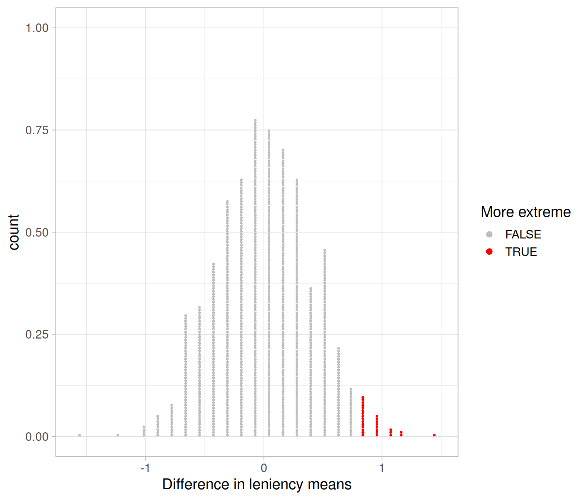
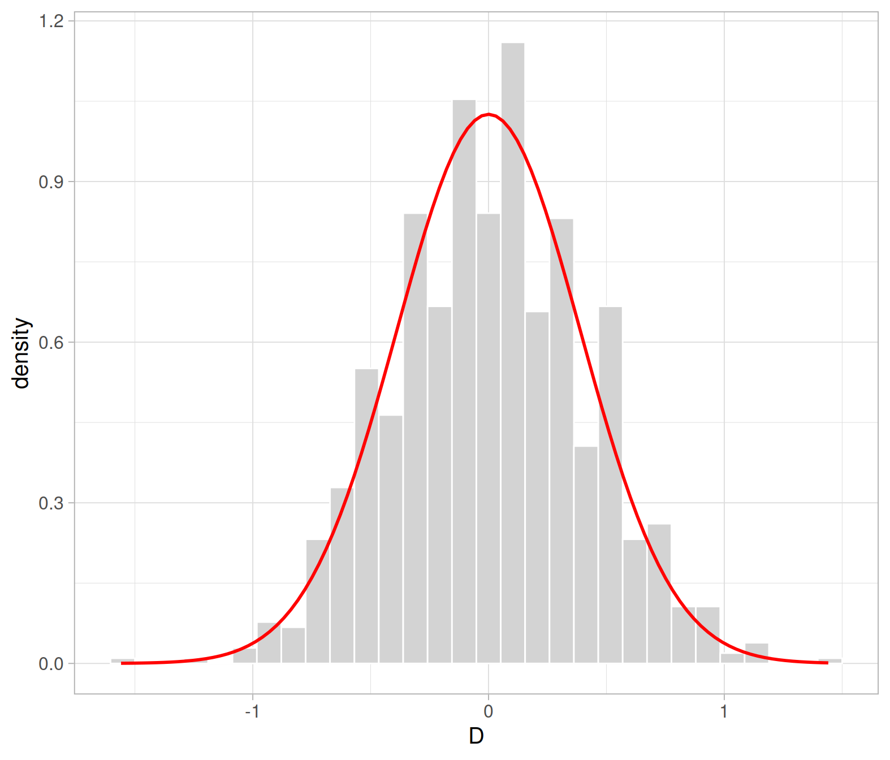
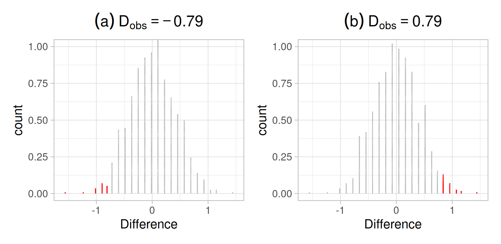

We saw that a population is described by parameters, and samples are described by statistics. We typically cannot measure the entire population, so a population parameter needs to be estimated by a sample statistic. We quantified the uncertainty in our estimate by the standard error (SE) of the sample statistic. This is defined as the standard deviation of the sampling distribution. The latter shows the values of the sample statistic when computed on many samples of the same size from the same population.
In practice, however, we are not able to quantify the SE by taking repeated samples from the population, as due to money or time constraints we only have one sample of size \(n\). We learned to approximate the sampling distribution by bootstrapping. This approach repeatedly samples with replacement from the observed sample, using the same sample size. The standard deviation of the bootstrap distribution is an estimate of the SE of the statistic. Using the statistic from the observed sample, and the estimated SE from the bootstrap distribution, we learned how to give a range of plausible values for the population parameter.
This week we will learn how to use the sample data to answer a wide range of questions about a population.
Can a simple smile have an effect on punishment assigned following an infraction?
Researchers LaFrance and Hecht (1995) conducted a study to examine the effect of a smile on the leniency of disciplinary action for wrongdoers. Participants in the experiment took on the role of members of a college disciplinary panel judging students accused of cheating. They were given, along with a description of the offence, a picture of the “suspect” who was either smiling or had a neutral facial expression. A leniency score (on a 10-point scale) was calculated based on the disciplinary decisions made by the participants. The full data can be found in the Smiles.csv dataset, also available at the following link: https://uoepsy.github.io/data/Smiles.csv
The experimenters have prior knowledge that smiling has a positive influence on people, and they are testing to see if the average lenience score is higher for smiling students than it is for students with a neutral facial expression (or, in other words, that smiling students are given more leniency and milder punishments.)
Read the Smiles.csv data into R, and name it smiles.
How many participants are in each group? What’s the mean leniency score and its standard deviation in each group?
Produce a boxplot displaying the distribution of leniency scores in each group.
Alternatively, the plot below shows a dotplot with the means marked as red plus symbols:
ggplot(smiles, aes(x = Group, y = Leniency)) +
geom_dotplot(binaxis = 'y') +
geom_point(x = 1 - 0.05, y = stats$M[1],
color = 'red', size = 3, shape = 3) +
geom_point(x = 2 - 0.05, y = stats$M[2],
color = 'red', size = 3, shape = 3)
From the above plots it looks like the mean leniency score in the smiling group is higher than in the neutral group.
The observed difference in sample means is:
stats %>%
summarise(D_obs = diff(M)) %>%
pull(D_obs)## [1] 0.7941176
For ease of use throughout the rest of the document, I’ll assign the observed difference in sample means to a variable called D_obs:
D_obs <- diff(stats$M)
D_obs## [1] 0.7941176Define
The observed difference in means is \(D_{obs} = \bar x_s - \bar x_n =\) 0.79.
The null and alternative hypotheses, defined below, are precise statements about the population parameters and need to be written using appropriate symbols for the parameters. They are obtained from the research question of interest.
The null hypothesis (denoted \(H_0\)) is a statement that there is nothing happening. The specific null hypothesis varies from problem to problem, but generally it can be thought of as the status quo, or no relationship, or no difference. In most situations, the researcher hopes to disprove or reject the null hypothesis.
The alternative hypothesis (denoted \(H_1\)) is a statement that something is happening. In most situations, this hypothesis is what the researcher hopes to prove. It may be a statement that the assumed status quo is false, or that there is a relationship, or that there is a difference.
To visually help you identify the null vs the alternative, typically:
If \(H_1\) contains either \(>\) or \(<\), we say that the alternative hypothesis is one-sided. If \(H_1\) contains \(\neq\), we say that the alternative hypothesis is two-sided.
In a hypothesis test, we measure evidence against the null hypothesis and in favour of the alternative hypothesis.
Before stating the null and alternative hypothesis it is important to clearly introduce the notation for the relevant population parameters and define them.
The researchers’ hypothesis that smiling students are given more leniency and milder punishments involves two parameters:
The null hypothesis is that facial expression has no effect on the punishment given, i.e. that the population mean leniency score for smiling students is the same as that of neutral students. In other words, there is no difference in population mean leniency score between smiling and neutral students.
The alternative hypothesis, instead, is the claim of interest to the researchers, i.e. that smiling results in a higher mean leniency score compared to non-smiling students.
We are now ready to formally write the hypotheses being tested:
\[ H_0: \mu_s = \mu_n \\ H_1: \mu_s > \mu_n \]
These can be equivalently written as follows:
\[ H_0: \mu_s - \mu_n = 0 \\ H_1: \mu_s - \mu_n > 0 \]
Note that the hypotheses are written in terms of the population parameters \(\mu_s\) and \(\mu_n\), not in terms of the sample statistics \(\bar x_s\) and \(\bar x_n\). In fact, we already know that in the collected sample the mean leniency score is larger for smiling students. The key question is whether the sample provides convincing evidence that mean leniency score for all smiling students is larger than the mean leniency score for all neutral students.
The mean leniency score for smiling students in the sample is \(\bar x_s =\) 4.91
The mean leniency score for neutral students in the sample is \(\bar x_n =\) 4.12
The sample difference in mean leniency scores is \(D_{obs} = \bar x_s - \bar x_n =\) 0.7917647
The population difference in mean leniency scores is \(\mu_s - \mu_n\) and is unknown. This is the object of our inferences.
The goal of hypothesis testing is to assess whether the sample data are consistent with the researchers’ hypothesis.
Our null hypothesis specifies an hypothesised value of 0 for the unknown parameter \(\mu_s - \mu_n\). We will answer the key question: “Is an observed difference in sample means of 0.79 units far enough from 0 to provide sufficient evidence that the difference in population means is not 0?”
As we saw in the last week of semester 1, sample statistics vary from sample to sample. Even if there was really no difference in the mean leniency scores for all smiling students and all neutral students, the sample means would not be exactly equal in every random sample.
The key question is then: how do we decide in a principled way if the difference in sample means is sufficiently large to suggest that the population means are in fact different too?
We saw that the sample difference in mean leniency score is \(\bar x_s - \bar x_n =\) 0.79. Is 0.79 sufficiently larger than 0 to suggest that the population means are different?
The set of principles that allows us to make an informed claim under uncertainty about the population is called statistical hypothesis testing.
Statistical test
A statistical test is a method that uses the data collected on a sample to assess a claim about the population.
Now that we have defined a framework to assess two competing hypotheses about a population parameter, how do we quantify the evidence that the sample data bring in favour of the alternative hypothesis?
We do this by quantifying how unusual it is to obtain a statistic as extreme or more extreme than the observed statistic, if the null hypothesis is true. If it is very unusual, we have significant evidence against the null hypothesis.
Statistical significance
Assuming the null hypothesis to be true, we say that the sample results are statistically significant if it is unlikely that by random sampling alone we obtain a statistic that is as extreme as the observed sample statistic, or more extreme (in the direction specified by the alternative hypothesis).
Hypothesis testing basically boils down to quantifying how likely or unlikely it is to observe the sample statistic if the null hypothesis is true. Two decisions are possible:
If the sample data are statistically significant, we reject \(H_0\) as we have enough evidence against \(H_0\) and in favour of \(H_1\).
If the sample data are not statistically significant, we do not reject \(H_0\) as we do not have convincing evidence against \(H_0\).
This has an analogy in law. One of the fundamental legal principles is the presumption of innocence, which says that a person is considered innocent until proven guilty, and that the evidence must be beyond reasonable doubt.
The null hypothesis (\(H_0\)), corresponding to no effect, is that the defendant is innocent. The alternative hypothesis (\(H_1\)) is that the defendant is guilty.
The court presumes \(H_0\) to be true (the defendant is innocent) unless the prosecutor can provide strong evidence that the defendant is guilty beyond a reasonable doubt. The burden of proof is on the prosecutor (in our case, the data) to convince the court that the defendant is guilty.
Similarly, we retain \(H_0\) unless there is strong evidence to reject \(H_0\).
If results are statistically significant:
If results are not statistically significant:
In the previous section, we said that if the observed statistic is very unusual, we have significant evidence against the null hypothesis. But how do we quantify if a value is unusual?
The key idea is to look at the sampling distribution of the statistic if \(H_0\) were true. We do this by generating many samples, assuming the null hypothesis to be true, and computing the statistic on each of the generated samples. The distribution of these statistics is called the null distribution.
Null distribution
The null distribution is the sampling distribution of the statistic assuming the null hypothesis to be true.
Centre: The null distribution is centred at the value of the population parameter specified in the null hypothesis.
The sample statistic of interest is the difference in sample means. For our data, the observed difference in sample means is
\[ \bar x_s - \bar x_n = 0.79 \]
To determine whether this difference is statistically significant, we need to find the chance of a difference as large as 0.79 occurring if if smiling had really no effect on leniency scores.
We generate a null distribution by assuming the null hypothesis is true. In this case, the null hypothesis is \(\mu_s = \mu_n\) or, more generally, that smiling has no effect on leniency scores. What the assumption means, is that a person’s leniency score would be the same whether the person is assigned to the smiling or neutral facial expression group. Any of the values in the smiling group could just as easily have come from the non-smiling group and vice versa if a different random assignment had been made at the start of the experiment.
To create a null distribution by assuming \(H_0\) true, do the following steps many times:
randomly assign the 68 observed leniency scores to the two facial expression groups
compute the difference in sample means \(\bar x_s - \bar x_n\)
repeat the two steps above
You can think of this as writing the observed leniency numbers on 68 cards, shuffling the deck, and then repeatedly dealing them at random into two piles of 34 cards each. Each such random deal corresponds to a different random assignment of the subjects to the two facial expression groups, if the null hypothesis (no effect due to smiling) is true. If we repeat this many times, we obtain a null distribution of possible differences in the means under the assumption that the null hypothesis is true.
And so on…
As we can see, the statistic “difference in means” (\(D\)) varies from randomization sample to randomization sample.
A visual representation of the approach is given below, where the group “neutral face” is represented in bold orange font, while “smiling face” is shown in blue font.

In R we use the function rep_randomize(data, columns, samples) which has the following arguments:
data: the data that we are usingcolumns: the name of the factor which we want to randomizesamples (by default 1): the number of samples we want to obtainNOTE
Every time you wish to use the rep_randomize() function in your analysis, you need to make sure you import it into your R session by placing this line of code in your file
source("https://uoepsy.github.io/files/rep_randomize.R")Load the function:
source("https://uoepsy.github.io/files/rep_randomize.R")Set the random number generator seed to any number you like. If you use the same as me, you will get my same results. The random seed is something computers use to generate random numbers. They start from a starting seed, set with set.seed(), and every time they generate a random number they increase the seed by 1.
set.seed(1)Compare the first 6 rows in the original data and in the randomized sample:
# Original data
head(smiles)## # A tibble: 6 x 2
## Leniency Group
## <dbl> <fct>
## 1 7 smile
## 2 3 smile
## 3 6 smile
## 4 4.5 smile
## 5 3.5 smile
## 6 4 smile# A randomized sample
head(rep_randomize(smiles, columns = 'Group', samples = 1))## # A tibble: 6 x 3
## sample Leniency Group
## <dbl> <dbl> <fct>
## 1 1 7 neutral
## 2 1 3 neutral
## 3 1 6 smile
## 4 1 4.5 smile
## 5 1 3.5 neutral
## 6 1 4 smileWe notice that the Leniency scores are the same, but the group assignment was changed.
We can generate many more randomized samples, 1000 for example, as follows
rand_samples <- rep_randomize(smiles, columns = 'Group', samples = 1000)
rand_samples## # A tibble: 68,000 x 3
## sample Leniency Group
## <dbl> <dbl> <fct>
## 1 1 7 neutral
## 2 1 3 smile
## 3 1 6 smile
## 4 1 4.5 smile
## 5 1 3.5 neutral
## 6 1 4 smile
## 7 1 3 neutral
## 8 1 3 smile
## 9 1 3.5 neutral
## 10 1 4.5 neutral
## # … with 67,990 more rowswhich will have 68000 rows = 68 (rows of the original data) * 1000 (number of samples). The more samples you generate, the more precise the analysis will be. When publishing papers, you might typically want 10,000 or 100,000 samples!
We can now compute the difference in mean leniency scores for each sample:
null_dist <- rand_samples %>%
group_by(sample, Group) %>%
summarise(M = mean(Leniency)) %>%
group_by(sample) %>%
summarise(D = diff(M))
null_dist## # A tibble: 1,000 x 2
## sample D
## <dbl> <dbl>
## 1 1 0.441
## 2 2 -0.0882
## 3 3 -0.0882
## 4 4 0.294
## 5 5 -0.529
## 6 6 -0.706
## 7 7 -0.118
## 8 8 0.5
## 9 9 -0.382
## 10 10 -0.0294
## # … with 990 more rowsWe can plot the null distribution:
ggplot(null_dist, aes(x = D)) +
geom_dotplot(dotsize = 0.23, fill = 'gray') +
labs(x = "Difference in leniency means")
Each point in the plot above corresponds to one of the 1000 differences in sample means \(\bar x_s - \bar x_n\).
Since we started by assuming that \(H_0 : \mu_s - \mu_n = 0\) is true, it is should be no surprise that the null distribution of the statistic “difference in means” is centred approximately at zero (the hypothesised value for \(\mu_s - \mu_n\) in \(H_0\)) and symmetric.
Remark
The null distribution should be centred at the value of the parameter specified in the null hypothesis.
Let’s show with a vertical red line the observed difference in the original sample:
ggplot(null_dist, aes(x = D)) +
geom_dotplot(dotsize = 0.23, fill = 'gray') +
geom_vline(xintercept = D_obs, color = 'red') +
geom_text(aes(x = D_obs + 0.2, y = 0.5, label = 'D_obs'), color = 'red') +
labs(x = "Difference in leniency means")
Would the observed difference in our collected data, \(\bar x_s - \bar x_n =\) 0.79, have a high chance of occurring under the null hypothesis that smiling does not affect leniency?
Different researchers might reach different conclusions by looking at this plot. Rather than taking a decision by visually inspecting the plot, we want to find a generically applicable tool that would make different researchers all reach to the same conclusion.
We have evidence against the null hypothesis if it would be very unusual to obtain statistics as extreme or more extreme than the observed statistic in the null distribution.
To summarise: in order to measure how unusual the observed statistic is under the null hypothesis, we need to generate many statistics under the null hypothesis (null distribution) and see what’s the proportion of the generated statistics that are as extreme as, or more extreme than, the observed statistic.
The proportion of statistics in the null distribution as extreme or more extreme than the observed statistic is known as the p-value. The smaller the p-value, the higher the statistical evidence against the null hypothesis.
P-value
The p-value represents the chance of obtaining a statistic as extreme or more extreme than the observed one (in the direction specified by the alternative hypothesis), if the null hypothesis were true.
NOTE
The p-value is a probability, so it’s always between 0 and 1.
We can identify the statistics in the null distribution that are as extreme or more extreme than the observed one by colour-coding them.
The following chunk colour-codes the differences in sample means that are equal to, or greater, than the observed difference:
ggplot(null_dist, aes(x = D, fill = D >= D_obs)) +
geom_dotplot(dotsize = 0.23, color = NA) +
scale_fill_manual(values = c("gray", "red")) +
labs(x = "Difference in leniency means",
fill = "More extreme")
We can calculate the proportion of statistics in the null distribution which are greater than or equal \(\bar x_s - \bar x_n =\) 0.79. You can either do that by eye, counting the red dots (in my case this is 29) and dividing them by the total number of dots (1,000) or, more quickly:
pvalue_greaterthan <- sum(null_dist$D >= D_obs) / nrow(null_dist)
pvalue_greaterthan## [1] 0.029We may interpret the p-value as follows:
If smiling had no effect on leniency scores, the chance of getting a difference in mean leniency scores between smiling and neutral students as high as 0.79 is 0.029, or 3 in 100 times.
The smaller the p-value, the greater the evidence that the data provide against the null hypothesis \(H_0\).
Which of the following p-values gives the strongest evidence against \(H_0\)?
The outcome of a statistical test is either:
How small should the p-value be?
This is set by the researcher before seeing any data. We decide if a p-value is small or not by specifying a threshold below which a p-value is deemed to be small.
Significance level
The significance level \(\alpha\) is the threshold below which we deem a p-value small enough to reject the null hypothesis.
Typical significance levels are \(\alpha = 0.05\), \(\alpha = 0.01\), or \(\alpha = 0.10\).
It is fundamental to specify the chosen threshold once for all at the beginning of your study.
For a given significance level \(\alpha\):
Caution
Never accept \(H_0\). “Do not reject \(H_0\)” is not the same as “accept \(H_0\).” Not having sufficient evidence against \(H_0\) does not mean having evidence for \(H_0\).
The following table summarizes in words the strength of evidence that the sample results bring in favour of the alternative hypothesis for different p-values:
| Approximate size of p-value | Loose interpretation |
|---|---|
| p-value \(>\) 0.1 | little or no evidence against \(H_0\) |
| 0.05 \(<\) p-value \(\leq\) 0.1 | some evidence against \(H_0\) |
| 0.01 \(<\) p-value \(\leq\) 0.05 | strong evidence against \(H_0\) |
| p-value \(\leq\) 0.01 | very strong evidence against \(H_0\) |
To conclude our example,
At a 5% significance level, we tested whether the mean leniency score for smiling students is higher than for students with a neutral expression. The p-value of the test (\(p = 0.029\)) indicates that if smiling truly had no effect on leniency scores, the chance of getting a difference in mean leniency scores between smiling and neutral students as high as 0.79 is 0.029, or 3 in 100 times. The sample data provide strong evidence against the null hypothesis that smiling had no effect on leniency and in favour of the alternative.
Based on these data we conclude that smiling makes a difference and we expect more leniency, on average, to be awarded to smiling suspects. If you go before a disciplinary panel, you should smile!
We have learned to assess how much evidence the sample data bring against the null hypothesis and in favour of the alternative hypothesis.
The null hypothesis, denoted \(H_0\), is a claim about a population parameter that is initially assumed to be true. It typically represents “no effect” or “no difference between groups.”
The alternative hypothesis, denoted \(H_1\), is the claim we seek evidence for.
We assessed the strength of evidence against \(H_0\) following these steps:
As we can see, the null distribution for the difference in means, obtained assuming the null hypothesis to be true, is symmetric about 0 and bell-shaped. In others words, the null distribution of the difference in means follows a normal distribution.
We know from last semester that, to do computations with a normal distribution, we need to know
where the curve should be centred at, i.e. the mean of the distribution
the spread of the curve, i.e. the standard deviation of the distribution
Recall that the distribution of the sample mean is \[ \bar X \sim N(\mu, SE), \qquad \qquad SE = \frac{\sigma}{\sqrt{n}} = \sqrt{\frac{\sigma^2}{n}} \]
In our case, however, we have the difference between two sample means. This will be distributed as: \[ \bar X_s - \bar X_n \sim N(\mu_s - \mu_n, SE), \qquad \qquad SE = \sqrt{\frac{\sigma_s^2}{n_s} + \frac{\sigma_n^2}{n_n}} \]
The null distribution, however, is the distribution of the sample statistic (\(\bar X_s - \bar X_n\)) when the null hypothesis (\(H_0: \mu_s - \mu_n = 0\)) is true. Hence, the null distribution is:
\[ \bar X_s - \bar X_n \sim N(0, SE) \]

For the next questions, use as standard deviations the sample standard deviations from question A2:
| Group | Count | M | SD |
|---|---|---|---|
| neutral | 34 | 4.12 | 1.52 |
| smile | 34 | 4.91 | 1.68 |
Compute the p-value for testing the following hypotheses by using the properties of the normal distribution (i.e. using the red curve): \[ H_0 : \mu_s - \mu_n = 0 \\ H_1 : \mu_s - \mu_n > 0 \]
How does it compare with the randomization-based approach?
Before, we have tested whether the leniency score is higher for smiling students.
Consider now the case when the experimenters believe that during a hearing for an offence such as cheating, a disciplinary panel will view smiling as arrogant and disrespectful. They are testing to see if there is evidence that smiling will cause harsher punishments (less leniency).
What would the null and the alternative hypotheses be in this case?
Using the null distribution previously computed, reach to a decision about the statistical hypotheses stated in your answer to the question B2.
Compute the p-value for testing the following hypothesis by using the properties of the normal distribution: \[ H_0 : \mu_s - \mu_n = 0 \\ H_1 : \mu_s - \mu_n < 0 \]
How does it compare with the randomization-based approach?
Consider now the scenario where the experimenters have no prior beliefs about the effect of smiling on leniency scores, and they are testing to see if facial expression has any effect (it could either increase or decrease leniency scores).
State the null and alternative hypotheses in this case where the researchers make no assumption in advance on whether smiling helps or discourages leniency.
For two-sided hypothesis tests, we have evidence against the null hypothesis when the observed statistic is either too large or too small, i.e. is in the right tail or the left tail of the distribution.
For this reason, when computing the p-value for a two-sided alternative we double the proportion of statistics in the null distribution more extreme than the observed one:

In case (a), we would 2 * proportion to the left of -0.79
In case (b), we would do 2 * proportion to the right of 0.79
WARNING
If your observed difference is negative (a) and you compute 2 * proportion to the right of the observed difference, you would obtain a p-value greater than 1, which is impossible! Always double the smaller tail.
In other words, if the observed statistic is negative, double the area to the left, not the area to its right. Similarly, if the observed statistic is positive, double the area to its right, not the area to its left!
TIME-SAVING TIP
If you don’t like to keep track of the two cases (either a negative observed difference or a positive observe difference), you can convert the observed difference to a positive value by using the absolute value function abs() which drops the sign, and then simply do 2 * proportion greater than abs(D_obs). This way you will be always dealing with the right tail, even if the observed difference was negative!
Two times the probability of observing a difference as extreme as the observed one is written also as: \[ \text{p-value} = 2 \cdot P(D > |D_{obs}|) \]
and, in R:
2 * sum(statistic >= abs(observed_statistic)) / number_of_samplesUsing the null distribution previously computed, reach to a decision about the statistical hypotheses stated in your answer to question B5.
Compute the p-value for testing the following hypothesis by using the properties of the normal distribution: \[ H_0 : \mu_s - \mu_n = 0 \\ H_1 : \mu_s - \mu_n \neq 0 \]
How does it compare with the randomization-based approach?